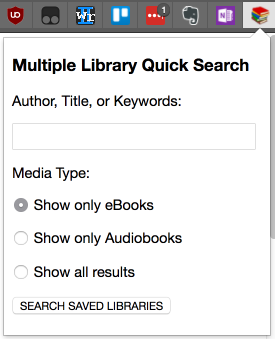

Setup Required - No OverDrive libraries found yet
- Please make sure you are logged into your www.OverDrive.com account. Note that your OverDrive account is not the same as having a card account for each individual library, though it will save your library card information to it as you checkout books while logged in.
- You must have saved at least one library in your OverDrive account. To find and save libraries, use the "Find a library" link at the top right of the OverDrive website.
- To automatically find the names and websites of your saved libraries, press the Setup button.
- The setup process will take a few seconds as it gathers your saved libraries and attempts to determine the correct Overdrive.com (or LibraryReserve.com) web address for searching them.
- Should the setup process not finish in under a minute, press the Cancel Setup button. You may then need to find and enter the correct web address manually as described below.
You may also enter your library information manually by using the Add and Save buttons below. If a web address does not point to a valid library on OverDrive.com or LibraryReserve.com, its background will turn red. This means it will not show up in the Multiple Library Search results.
In a few cases where a library still uses its own domain name for ebooks, the extension might not be able to resolve the correct OverDrive.com or LibraryReserve.com address. To fix such problems: Navigate to the library's OverDrive website in a new browser tab, then copy and paste the website address from the location bar of your browser into these options and save.
 This extension adds a results box hovering over an OverDrive search or book item page showing its availability for all of your saved libraries. Now you can see at a glance which libraries have the book available to borrow, how many holds are on how many copies at each library, and which libraries might not even own the book. One click takes you directly to a library to borrow it, or click elsewhere on the box to shrink or expand it to read the page beneath it.
 This extension also adds a popup button to your chrome toolbar. Use it to quickly search all of your
OverDrive libraries at once for an ebook or audiobook that you wish to check out.
This extension also adds a popup button to your chrome toolbar. Use it to quickly search all of your
OverDrive libraries at once for an ebook or audiobook that you wish to check out.
| Library Abbreviation | OverDrive Web Address | Library Full Name |
|---|